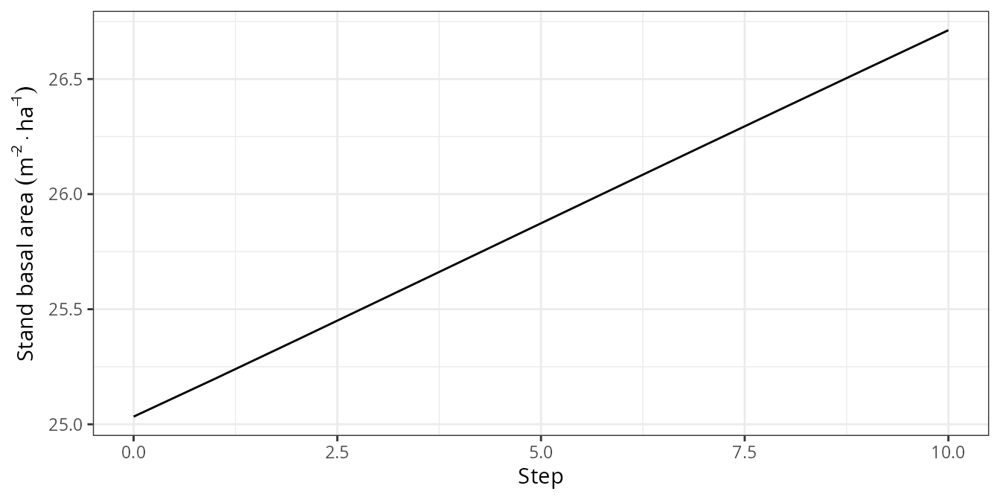
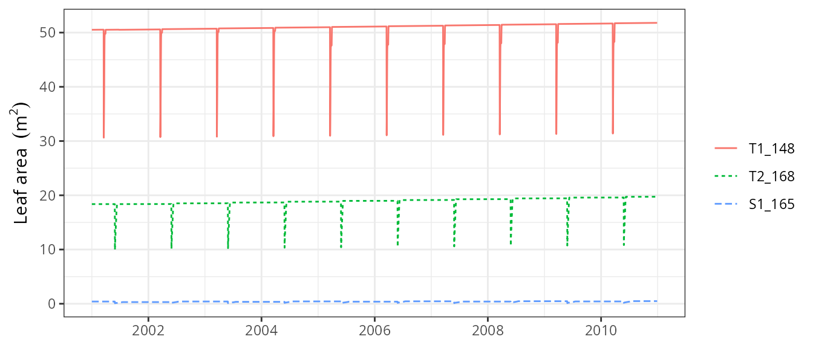

Forest dynamics
Miquel De Caceres
2024-02-27
Source:vignettes/runmodels/ForestDynamics.Rmd
ForestDynamics.RmdAbout this vignette
This document describes how to run the forest dynamics model of
medfate, described in De Cáceres et al. (2023) and
implemented in function fordyn(). This document is meant to
teach users to run the simulation model with function
fordyn(). Details of the model design and formulation can
be found at the corresponding chapters of the medfate
book.
Because the model builds on the growth and water balance models, the
reader is assumed here to be familiarized with spwb() and
growth() (otherwise read vignettes Basic
water balance and Forest
growth).
Preparing model inputs
Any forest dynamics model needs information on climate, vegetation
and soils of the forest stand to be simulated. Moreover, since models in
medfate differentiate between species, information on
species-specific model parameters is also needed. In this subsection we
explain the different steps to prepare the data needed to run function
fordyn().
Model inputs are explained in greater detail in vignettes Understanding
model inputs and Preparing
model inputs. Here we only review the different steps required
to run function fordyn().
Soil, vegetation, meteorology and species data
Soil information needs to be entered as a data frame
with soil layers in rows and physical attributes in columns. Soil
physical attributes can be initialized to default values, for a given
number of layers, using function defaultSoilParams():
spar <- defaultSoilParams(4)The soil input for water balance simulation is actually a list of
class soil that is created using a function with the same
name:
examplesoil <- soil(spar)As explained in the package overview, models included in
medfate were primarily designed to be ran on forest
inventory plots. Here we use the example object provided with
the package:
data(exampleforest)
exampleforest## $treeData
## Species N DBH Height Z50 Z95
## 1 Pinus halepensis 168 37.55 800 100 600
## 2 Quercus ilex 384 14.60 660 300 1000
##
## $shrubData
## Species Cover Height Z50 Z95
## 1 Quercus coccifera 3.75 80 200 1000
##
## $herbCover
## [1] 10
##
## $herbHeight
## [1] 20
##
## $seedBank
## [1] Species Percent
## <0 rows> (or 0-length row.names)
##
## attr(,"class")
## [1] "forest" "list"Importantly, a data frame with daily weather for the period to be simulated is required. Here we use the default data frame included with the package:
## dates MinTemperature MaxTemperature Precipitation MinRelativeHumidity
## 1 2001-01-01 -0.5934215 6.287950 4.869109 65.15411
## 2 2001-01-02 -2.3662458 4.569737 2.498292 57.43761
## 3 2001-01-03 -3.8541036 2.661951 0.000000 58.77432
## 4 2001-01-04 -1.8744860 3.097705 5.796973 66.84256
## 5 2001-01-05 0.3288287 7.551532 1.884401 62.97656
## 6 2001-01-06 0.5461322 7.186784 13.359801 74.25754
## MaxRelativeHumidity Radiation WindSpeed
## 1 100.00000 12.89251 2.000000
## 2 94.71780 13.03079 7.662544
## 3 94.66823 16.90722 2.000000
## 4 95.80950 11.07275 2.000000
## 5 100.00000 13.45205 7.581347
## 6 100.00000 12.84841 6.570501Finally, simulations in medfate require a data frame
with species parameter values, which we load using defaults for
Catalonia (NE Spain):
data("SpParamsMED")Simulation control
Apart from data inputs, the behaviour of simulation models can be
controlled using a set of global parameters. The default
parameterization is obtained using function
defaultControl():
control <- defaultControl("Granier")Here we will run simulations of forest dynamics using the basic water
balance model (i.e. transpirationMode = "Granier"). The
complexity of the soil water balance calculations can be changed by
using "Sperry" as input to defaultControl().
However, when running fordyn() sub-daily output will never
be stored (i.e. setting subdailyResults = TRUE is
useless).
Executing the forest dynamics model
In this vignette we will fake a ten-year weather input by repeating the example weather data frame ten times.
meteo <- rbind(examplemeteo, examplemeteo, examplemeteo, examplemeteo,
examplemeteo, examplemeteo, examplemeteo, examplemeteo,
examplemeteo, examplemeteo)
meteo$dates = seq(as.Date("2001-01-01"),
as.Date("2010-12-29"), by="day")Now we run the forest dynamics model using all inputs (note that no
intermediate input object is needed, as in spwb() or
growth()):
fd<-fordyn(exampleforest, examplesoil, SpParamsMED, meteo, control,
latitude = 41.82592, elevation = 100)## Simulating year 2001 (1/10): (a) Growth/mortality## Package 'meteoland' [ver. 2.2.1]## , (b) Regeneration nT = 2 nS = 1
## Simulating year 2002 (2/10): (a) Growth/mortality, (b) Regeneration nT = 2 nS = 1
## Simulating year 2003 (3/10): (a) Growth/mortality, (b) Regeneration nT = 2 nS = 1
## Simulating year 2004 (4/10): (a) Growth/mortality, (b) Regeneration nT = 2 nS = 1
## Simulating year 2005 (5/10): (a) Growth/mortality, (b) Regeneration nT = 2 nS = 1
## Simulating year 2006 (6/10): (a) Growth/mortality, (b) Regeneration nT = 2 nS = 1
## Simulating year 2007 (7/10): (a) Growth/mortality, (b) Regeneration nT = 2 nS = 1
## Simulating year 2008 (8/10): (a) Growth/mortality, (b) Regeneration nT = 2 nS = 1
## Simulating year 2009 (9/10): (a) Growth/mortality, (b) Regeneration nT = 2 nS = 1
## Simulating year 2010 (10/10): (a) Growth/mortality, (b) Regeneration nT = 2 nS = 1It is worth noting that, while fordyn() calls function
growth() internally for each simulated year, the
verbose option of the control parameters only affects
function fordyn() (i.e. all console output from
growth() is hidden). Recruitment and summaries are done
only once a year at the level of function fordyn().
Inspecting model outputs
Stand, species and cohort summaries and plots
Among other outputs, function fordyn() calculates
standard summary statistics that describe the structural and
compositional state of the forest at each time step. For example, we can
access stand-level statistics using:
fd$StandSummary## Step NumTreeSpecies NumTreeCohorts NumShrubSpecies NumShrubCohorts
## 1 0 2 2 1 1
## 2 1 2 2 1 1
## 3 2 2 2 1 1
## 4 3 2 2 1 1
## 5 4 2 2 1 1
## 6 5 2 2 1 1
## 7 6 2 2 1 1
## 8 7 2 2 1 1
## 9 8 2 2 1 1
## 10 9 2 2 1 1
## 11 10 2 2 1 1
## TreeDensityLive TreeBasalAreaLive DominantTreeHeight DominantTreeDiameter
## 1 552.0000 25.03330 800.0000 37.55000
## 2 551.3644 25.32289 812.8313 37.78966
## 3 550.7188 25.61470 825.5783 38.03033
## 4 550.0629 25.90778 838.2227 38.27166
## 5 549.3948 26.20166 850.7522 38.51341
## 6 548.7180 26.49638 863.1620 38.75546
## 7 548.0307 26.79166 875.4482 38.99774
## 8 547.3327 27.08732 887.6085 39.24017
## 9 546.6219 27.38321 899.6424 39.48272
## 10 545.9022 27.67950 911.5498 39.72538
## 11 545.1756 27.97624 923.3304 39.96811
## QuadraticMeanTreeDiameter HartBeckingIndex ShrubCoverLive BasalAreaDead
## 1 24.02949 53.20353 3.750000 0.00000000
## 2 24.18200 52.39384 3.114516 0.03951377
## 3 24.33519 51.61510 3.185849 0.04069556
## 4 24.48860 50.86680 3.258765 0.04190937
## 5 24.64207 50.14812 3.333465 0.04327307
## 6 24.79555 49.45760 3.409757 0.04443016
## 7 24.94896 48.79408 3.487682 0.04573462
## 8 25.10224 48.15627 3.567259 0.04706885
## 9 25.25537 47.54300 3.649450 0.04856694
## 10 25.40837 46.95287 3.731452 0.04982945
## 11 25.56122 46.38469 3.815183 0.05097048
## ShrubCoverDead BasalAreaCut ShrubCoverCut
## 1 0.000000000 0 0
## 2 0.005321188 0 0
## 3 0.004831917 0 0
## 4 0.004942545 0 0
## 5 0.005069738 0 0
## 6 0.005171709 0 0
## 7 0.005289997 0 0
## 8 0.005410809 0 0
## 9 0.005549884 0 0
## 10 0.005661045 0 0
## 11 0.005755979 0 0Species-level analogous statistics are shown using:
fd$SpeciesSummary## Step Species NumCohorts TreeDensityLive TreeBasalAreaLive
## 1 0 Pinus halepensis 1 168.0000 18.604547
## 2 0 Quercus coccifera 1 NA NA
## 3 0 Quercus ilex 1 384.0000 6.428755
## 4 1 Pinus halepensis 1 167.6982 18.808943
## 5 1 Quercus coccifera 1 NA NA
## 6 1 Quercus ilex 1 383.6662 6.513943
## 7 2 Pinus halepensis 1 167.3913 19.014416
## 8 2 Quercus coccifera 1 NA NA
## 9 2 Quercus ilex 1 383.3275 6.600280
## 10 3 Pinus halepensis 1 167.0792 19.220595
## 11 3 Quercus coccifera 1 NA NA
## 12 3 Quercus ilex 1 382.9837 6.687180
## 13 4 Pinus halepensis 1 166.7609 19.427102
## 14 4 Quercus coccifera 1 NA NA
## 15 4 Quercus ilex 1 382.6339 6.774557
## 16 5 Pinus halepensis 1 166.4381 19.633992
## 17 5 Quercus coccifera 1 NA NA
## 18 5 Quercus ilex 1 382.2799 6.862385
## 19 6 Pinus halepensis 1 166.1100 19.841040
## 20 6 Quercus coccifera 1 NA NA
## 21 6 Quercus ilex 1 381.9207 6.950619
## 22 7 Pinus halepensis 1 165.7763 20.048146
## 23 7 Quercus coccifera 1 NA NA
## 24 7 Quercus ilex 1 381.5563 7.039175
## 25 8 Pinus halepensis 1 165.4363 20.255124
## 26 8 Quercus coccifera 1 NA NA
## 27 8 Quercus ilex 1 381.1856 7.128090
## 28 9 Pinus halepensis 1 165.0916 20.462138
## 29 9 Quercus coccifera 1 NA NA
## 30 9 Quercus ilex 1 380.8106 7.217365
## 31 10 Pinus halepensis 1 164.7432 20.669249
## 32 10 Quercus coccifera 1 NA NA
## 33 10 Quercus ilex 1 380.4324 7.306987
## ShrubCoverLive BasalAreaDead ShrubCoverDead BasalAreaCut ShrubCoverCut
## 1 NA 0.000000000 NA 0 NA
## 2 3.750000 NA 0.000000000 NA 0
## 3 NA 0.000000000 NA 0 NA
## 4 NA 0.033846458 NA 0 NA
## 5 3.114516 NA 0.005321188 NA 0
## 6 NA 0.005667308 NA 0 NA
## 7 NA 0.034862863 NA 0 NA
## 8 3.185849 NA 0.004831917 NA 0
## 9 NA 0.005832699 NA 0 NA
## 10 NA 0.035906962 NA 0 NA
## 11 3.258765 NA 0.004942545 NA 0
## 12 NA 0.006002410 NA 0 NA
## 13 NA 0.037079734 NA 0 NA
## 14 3.333465 NA 0.005069738 NA 0
## 15 NA 0.006193336 NA 0 NA
## 16 NA 0.038075680 NA 0 NA
## 17 3.409757 NA 0.005171709 NA 0
## 18 NA 0.006354481 NA 0 NA
## 19 NA 0.039198095 NA 0 NA
## 20 3.487682 NA 0.005289997 NA 0
## 21 NA 0.006536529 NA 0 NA
## 22 NA 0.040346252 NA 0 NA
## 23 3.567259 NA 0.005410809 NA 0
## 24 NA 0.006722600 NA 0 NA
## 25 NA 0.041635055 NA 0 NA
## 26 3.649450 NA 0.005549884 NA 0
## 27 NA 0.006931881 NA 0 NA
## 28 NA 0.042722075 NA 0 NA
## 29 3.731452 NA 0.005661045 NA 0
## 30 NA 0.007107376 NA 0 NA
## 31 NA 0.043705017 NA 0 NA
## 32 3.815183 NA 0.005755979 NA 0
## 33 NA 0.007265463 NA 0 NAPackage medfate provides a simple plot
function for objects of class fordyn. For example, we can
show the interannual variation in stand-level basal area using:
plot(fd, type = "StandBasalArea")
Tree/shrub tables
Another useful output of fordyn() are tables in long
format with cohort structural information (i.e. DBH, height, density,
etc) for each time step:
fd$TreeTable## Step Year Cohort Species DBH Height N Z50 Z95
## 1 0 NA T1_148 Pinus halepensis 37.55000 800.0000 168.0000 100 600
## 2 0 NA T2_168 Quercus ilex 14.60000 660.0000 384.0000 300 1000
## 3 1 2001 T1_148 Pinus halepensis 37.78966 812.8313 167.6982 100 600
## 4 1 2001 T2_168 Quercus ilex 14.70281 663.2086 383.6662 300 1000
## 5 2 2002 T1_148 Pinus halepensis 38.03033 825.5783 167.3913 100 600
## 6 2 2002 T2_168 Quercus ilex 14.80646 666.4497 383.3275 300 1000
## 7 3 2003 T1_148 Pinus halepensis 38.27166 838.2227 167.0792 100 600
## 8 3 2003 T2_168 Quercus ilex 14.91030 669.7017 382.9837 300 1000
## 9 4 2004 T1_148 Pinus halepensis 38.51341 850.7522 166.7609 100 600
## 10 4 2004 T2_168 Quercus ilex 15.01425 672.9614 382.6339 300 1000
## 11 5 2005 T1_148 Pinus halepensis 38.75546 863.1620 166.4381 100 600
## 12 5 2005 T2_168 Quercus ilex 15.11826 676.2261 382.2799 300 1000
## 13 6 2006 T1_148 Pinus halepensis 38.99774 875.4482 166.1100 100 600
## 14 6 2006 T2_168 Quercus ilex 15.22230 679.4938 381.9207 300 1000
## 15 7 2007 T1_148 Pinus halepensis 39.24017 887.6085 165.7763 100 600
## 16 7 2007 T2_168 Quercus ilex 15.32627 682.7609 381.5563 300 1000
## 17 8 2008 T1_148 Pinus halepensis 39.48272 899.6424 165.4363 100 600
## 18 8 2008 T2_168 Quercus ilex 15.43026 686.0288 381.1856 300 1000
## 19 9 2009 T1_148 Pinus halepensis 39.72538 911.5498 165.0916 100 600
## 20 9 2009 T2_168 Quercus ilex 15.53423 689.2955 380.8106 300 1000
## 21 10 2010 T1_148 Pinus halepensis 39.96811 923.3304 164.7432 100 600
## 22 10 2010 T2_168 Quercus ilex 15.63815 692.5593 380.4324 300 1000The same can be shown for dead trees:
fd$DeadTreeTable## Step Year Cohort Species DBH Height N N_starvation
## 1 1 2001 T1_148 Pinus halepensis 37.78966 812.8313 0.3017709 0
## 2 1 2001 T2_168 Quercus ilex 14.70281 663.2086 0.3338001 0
## 3 2 2002 T1_148 Pinus halepensis 38.03033 825.5783 0.3069114 0
## 4 2 2002 T2_168 Quercus ilex 14.80646 666.4497 0.3387483 0
## 5 3 2003 T1_148 Pinus halepensis 38.27166 838.2227 0.3121291 0
## 6 3 2003 T2_168 Quercus ilex 14.91030 669.7017 0.3437660 0
## 7 4 2004 T1_148 Pinus halepensis 38.51341 850.7522 0.3182899 0
## 8 4 2004 T2_168 Quercus ilex 15.01425 672.9614 0.3498059 0
## 9 5 2005 T1_148 Pinus halepensis 38.75546 863.1620 0.3227690 0
## 10 5 2005 T2_168 Quercus ilex 15.11826 676.2261 0.3539863 0
## 11 6 2006 T1_148 Pinus halepensis 38.99774 875.4482 0.3281680 0
## 12 6 2006 T2_168 Quercus ilex 15.22230 679.4938 0.3591674 0
## 13 7 2007 T1_148 Pinus halepensis 39.24017 887.6085 0.3336196 0
## 14 7 2007 T2_168 Quercus ilex 15.32627 682.7609 0.3643965 0
## 15 8 2008 T1_148 Pinus halepensis 39.48272 899.6424 0.3400596 0
## 16 8 2008 T2_168 Quercus ilex 15.43026 686.0288 0.3706931 0
## 17 9 2009 T1_148 Pinus halepensis 39.72538 911.5498 0.3446881 0
## 18 9 2009 T2_168 Quercus ilex 15.53423 689.2955 0.3750073 0
## 19 10 2010 T1_148 Pinus halepensis 39.96811 923.3304 0.3483487 0
## 20 10 2010 T2_168 Quercus ilex 15.63815 692.5593 0.3782705 0
## N_dessication N_burnt Z50 Z95
## 1 0 0 100 600
## 2 0 0 300 1000
## 3 0 0 100 600
## 4 0 0 300 1000
## 5 0 0 100 600
## 6 0 0 300 1000
## 7 0 0 100 600
## 8 0 0 300 1000
## 9 0 0 100 600
## 10 0 0 300 1000
## 11 0 0 100 600
## 12 0 0 300 1000
## 13 0 0 100 600
## 14 0 0 300 1000
## 15 0 0 100 600
## 16 0 0 300 1000
## 17 0 0 100 600
## 18 0 0 300 1000
## 19 0 0 100 600
## 20 0 0 300 1000Accessing the output from function growth()
Since function fordyn() makes internal calls to function
growth(), it stores the result in a vector called
GrowthResults, which we can use to inspect intra-annual
patterns of desired variables. For example, the following shows the leaf
area for individuals of the three cohorts during the second year:
plot(fd$GrowthResults[[2]], "LeafArea", bySpecies = T) Instead of examining year by year, it is possible to plot the whole
series of results by passing a
Instead of examining year by year, it is possible to plot the whole
series of results by passing a fordyn object to the
plot() function:
plot(fd, "LeafArea")
Finally, we can create interactive plots for particular steps using
function shinyplot(), e.g.:
shinyplot(fd$GrowthResults[[1]])Forest dynamics including management
The package allows including forest management in simulations of
forest dynamics. This is done in a very flexible manner, in the sense
that fordyn() allows the user to supply an arbitrary
function implementing a desired management strategy for the stand whose
dynamics are to be simulated. The package includes, however, an in-built
default function called defaultManagementFunction() along
with a flexible parameterization, a list with defaults provided by
function defaultManagementArguments().
Here we provide an example of simulations including forest management:
# Default arguments
args <- defaultManagementArguments()
# Here one can modify defaults before calling fordyn()
#
# Simulation
fd<-fordyn(exampleforest, examplesoil, SpParamsMED, meteo, control,
latitude = 41.82592, elevation = 100,
management_function = defaultManagementFunction,
management_args = args)## Simulating year 2001 (1/10): (a) Growth/mortality & management [thinning], (b) Regeneration nT = 2 nS = 2
## Simulating year 2002 (2/10): (a) Growth/mortality & management [none], (b) Regeneration nT = 2 nS = 2
## Simulating year 2003 (3/10): (a) Growth/mortality & management [none], (b) Regeneration nT = 2 nS = 2
## Simulating year 2004 (4/10): (a) Growth/mortality & management [none], (b) Regeneration nT = 2 nS = 2
## Simulating year 2005 (5/10): (a) Growth/mortality & management [none], (b) Regeneration nT = 2 nS = 2
## Simulating year 2006 (6/10): (a) Growth/mortality & management [none], (b) Regeneration nT = 2 nS = 2
## Simulating year 2007 (7/10): (a) Growth/mortality & management [none], (b) Regeneration nT = 2 nS = 2
## Simulating year 2008 (8/10): (a) Growth/mortality & management [none], (b) Regeneration nT = 2 nS = 2
## Simulating year 2009 (9/10): (a) Growth/mortality & management [none], (b) Regeneration nT = 2 nS = 2
## Simulating year 2010 (10/10): (a) Growth/mortality & management [none], (b) Regeneration nT = 2 nS = 2When management is included in simulations, two additional tables are produced, corresponding to the trees and shrubs that were cut, e.g.:
fd$CutTreeTable## Step Year Cohort Species DBH Height N Z50 Z95
## 1 1 2001 T1_148 Pinus halepensis 37.78966 812.8313 9.655215 100 600
## 2 1 2001 T2_168 Quercus ilex 14.70281 663.2086 383.666200 300 1000Management parameters were those of an irregular model with thinning interventions from ‘below’, indicating that smaller trees were to be cut earlier:
args$type## [1] "irregular"
args$thinning## [1] "below"Note that in this example, there is resprouting of Quercus ilex after the thinning intervention, evidenced by the new cohort (T3_168) appearing in year 2001:
fd$TreeTable## Step Year Cohort Species DBH Height N Z50 Z95
## 1 0 NA T1_148 Pinus halepensis 37.550000 800.00000 168.0000 100 600
## 2 0 NA T2_168 Quercus ilex 14.600000 660.00000 384.0000 300 1000
## 3 1 2001 T1_148 Pinus halepensis 37.789660 812.83132 158.0430 100 600
## 4 1 2001 T3_168 Quercus ilex 1.000000 47.23629 3000.0000 300 1000
## 5 2 2002 T1_148 Pinus halepensis 38.030823 825.49338 157.8702 100 600
## 6 2 2002 T3_168 Quercus ilex 1.104724 53.65661 2698.6025 300 1000
## 7 3 2003 T1_148 Pinus halepensis 38.272571 838.03829 157.6946 100 600
## 8 3 2003 T3_168 Quercus ilex 1.210117 60.08821 2449.4557 300 1000
## 9 4 2004 T1_148 Pinus halepensis 38.514778 850.47190 157.5155 100 600
## 10 4 2004 T3_168 Quercus ilex 1.314995 66.49020 2242.3089 300 1000
## 11 5 2005 T1_148 Pinus halepensis 38.757322 862.78881 157.3340 100 600
## 12 5 2005 T3_168 Quercus ilex 1.420063 72.90669 2066.3618 300 1000
## 13 6 2006 T1_148 Pinus halepensis 39.000123 874.98547 157.1495 100 600
## 14 6 2006 T3_168 Quercus ilex 1.525239 79.33282 1915.2224 300 1000
## 15 7 2007 T1_148 Pinus halepensis 39.243129 887.06014 156.9620 100 600
## 16 7 2007 T3_168 Quercus ilex 1.630490 85.76760 1784.0671 300 1000
## 17 8 2008 T1_148 Pinus halepensis 39.486310 899.01238 156.7709 100 600
## 18 8 2008 T3_168 Quercus ilex 1.735873 92.21569 1669.1493 300 1000
## 19 9 2009 T1_148 Pinus halepensis 39.729627 910.84118 156.5772 100 600
## 20 9 2009 T3_168 Quercus ilex 1.841326 98.67552 1567.7148 300 1000
## 21 10 2010 T1_148 Pinus halepensis 39.973062 922.54689 156.3815 100 600
## 22 10 2010 T3_168 Quercus ilex 1.946866 105.14818 1477.5307 300 1000References
- De Cáceres M, Molowny-Horas R, Cabon A, Martínez-Vilalta J, Mencuccini M, García-Valdés R, Nadal-Sala D, Sabaté S, Martin-StPaul N, Morin X, D’Adamo F, Batllori E, Améztegui A (2023) MEDFATE 2.9.3: A trait-enabled model to simulate Mediterranean forest function and dynamics at regional scales. Geoscientific Model Development 16: 3165-3201 (https://doi.org/10.5194/gmd-16-3165-2023).